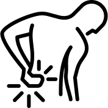
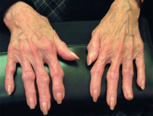
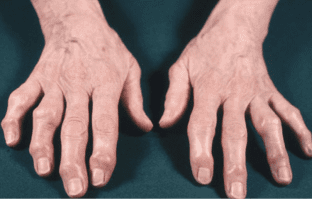
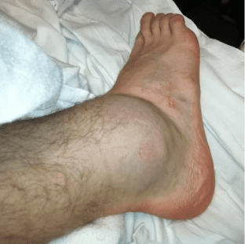
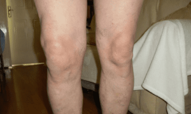
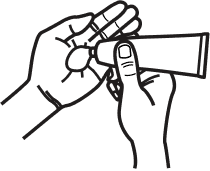
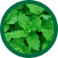
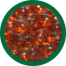
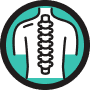
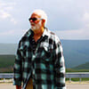

Hareketlilik sınırlaması:
Eklem ağrısı ve sertliği hareket kabiliyetini sınırlayabilir, yürümeyi, merdiven çıkmayı, eğilmeyi ve dönmeyi zorlaştırabilir.
%100 doğal


Hasar görmüş kas ve eklemlerin yenilenmesini destekler
Eklem ağrısının çeşitli nedenleri olabilir og bu sorunlar yaşam kalitenizi önemli ölçüde etkileyebilir.
Yaş önemli bir faktör değildir. Günümüzde kas-iskelet sistemi rahatsızlıkları olan hastaların yaşı hızla düşmektedir. Bu, modern yaşam tarzından etkilenir.
EKLEM SORUNLARI GÖZALDIĞI TAKDİRDE TAM ENGELLİLİĞE YOL AÇABİLİR.

Eklem kıkırdağının aşınması ve yıpranması, çoğunlukla yaşa veya aşırı kullanıma bağlı olarak osteoartrite neden olabilir.

Bağışıklık sisteminin eklemlere saldırarak iltihaplanmalarına neden olduğu bir otoimmün hastalık.

Kırıklar, burkulmalar, bağ veya eklem yaralanmaları eklem sorunlarına yol açabilir.
Kalıtım sizi çeşitli eklem hastalıklarına yatkın hale getirmede rol oynayabilir.
Örneğin metabolik bozukluklara bağlı hastalıklar eklemleri etkileyebilir.
Eklemlere, özellikle de ayaklara aşırı yük bendirilmesi, çeşitli sorunların yaşanma riskini artırabilir.

Tekrarlayan hareketler veya yanlış teknik, eklemlerde aşınma ve yıpranmaya neden olabilir.
Eklem ağrısı ve sertliği hareket kabiliyetini sınırlayabilir, yürümeyi, merdiven çıkmayı, eğilmeyi ve dönmeyi zorlaştırabilir.
Motor ve eklem sorunları, düğme ilikleme, kavanoz açma ve hatta yazı yazma gibi basit görevlerin yerine getirilmesini zorlaştırabilir.
Kalıcı ağrı, duygusal sağlığınızı etkileyen stres, endişe ve depresyon duygularına neden olabilir.
Eklem ağrısı yeterli uykuyu etkileyebilir, bu da kronik yorgunluğa ve genel enerji kaybına neden olabilir.
Ağrı ve hareket kısıtlılıkları sosyal aktivitelere katılımı zorlaştırabilir ve bu da sosyal izolasyona yol açabilir.
Eklem sorunları ellerinizi veya vücudunuzun diğer kısımlarını etkiliyorsa, belirli iş türlerini yapma yeteneğinizi etkileyebilir.
Akut ağrının hızla giderilmesine yardımcı olur
Hasarlı eklemlerin hareketliliğini geri kazanmaya yardımcı olur.
Hasar görmüş kas ve eklemlerin onarılmasına yardımcı olur.
Vücudun yenileyici özelliklerini harekete geçirmeye yardımcı olarak yaralanmalardan hızlı ve doğal iyileşmeyi destekler.
Bitkisel bileşenlerin sinerjisi bazen ürünün etkinliğini arttırır.
Kapsamlı bir yaklaşım, kas ve eklem yaralanmalarının nedenleriyle mücadele etmeye yardımcı olur.

Kullanımı kolay. Ürünü yaralı bölgeye günde iki kez uygulayın.

Eklem sağlığını destekleyen ve iltihabı azaltan A ve D vitaminlerinin yanı sıra omega-3 yağ asitlerini içerir.

Eklem sağlığını destekleyen ve iltihabı azaltan A ve D vitaminlerinin yanı sıra omega-3 yağ asitlerini içerir.
Potansiyel antioksidan ve antiinflamatuar özelliklere sahiptir ve vücudun yenileyici özelliklerini aktive etmeye yardımcı olarak yaralanmaların hızlı ve doğal iyileşmesini destekler.
Kemiklerimizin ve eklemlerimizin yapı malzemesidir ve yaralı eklemlerin hareket kabiliyetinin yeniden kazanılmasına yardımcı olur.
Eklem sorunları erken müdahale gerektiren ciddi durumlardır. Hareketi önemli ölçüde kısıtlayabilir, ağrıya neden olabilir ve yaşam kalitesini önemli ölçüde bozabilirler. Ortak destek özellikle önemlidir ve bu bağlamda Nautubone piyasadaki en iyi çözümlerden biridir.
Doğal içeriklere dayanan Nautubone, antiinflamatuar ve güçlendirici özellikleriyle bilinen aktif bileşenler içerir. Örneğin hint yağı ve kollajen eklem esnekliğini artırmaya ve ağrıyı hafifletmeye yardımcı olur.
Genel olarak ortak bakım, uzun vadeli sağlığınıza ve aktif bir yaşam tarzı sürdürmenize yapılan bir yatırımdır. Nautubone gibi ürünler, eklem güçlendirmeye yönelik bütünsel bir yaklaşıma faydalı bir katkı olabilir, ancak en iyi tedavi planını belirlemek için kalifiye bir hekime danışma ihtiyacının yerini almaz.
Krzysztof Simon - 15 yıllık deneyime sahip romatolog, başhekim
Akut ağrının hızla giderilmesine yardımcı olur
Hasarlı eklemlerin hareketliliğini geri kazanmaya yardımcı olur

Hasar görmüş kas ve eklemlerin yenilenmesini destekler
Vücudun yenileyici özelliklerini harekete geçirmeye yardımcı olarak yaralanmalardan hızlı ve doğal iyileşmeyi destekler.
Daha önce Nautubone'u deneyen hastaların görüşleri
Hasan Özdemir - 57 yaşında,
osteokondroz
60. yaş günüme giderken aktivitelerimi ciddi şekilde kısıtlayan eklem ağrılarıyla uğraşmak zorunda kaldım. Birkaç ilaç denedim ama Nautubone'un gerçek bir keşif olduğu ortaya çıktı. Sadece birkaç haftalık kullanımdan sonra önemli bir gelişme fark ettim. Balsam ağrıyı anında dindirir ve eklem esnekliğinin geri kazanılmasına yardımcı olur. Özellikle hoşuma giden şey Nautubone'un doğal bileşimiydi. Eklemler üzerindeki olumlu etkileri bilinen köpek balığı karaciğeri yağı ve kolajen gibi bileşenler içerir. Balsamın uygulanması kolaydır ve hızla emilir, yağlı bir his bırakmaz. Bugün Nautubone sayesinde kendimi yeniden dinç ve aktif hissediyorum. Acı endişesi duymadan özgürce hareket edebiliyorum. Bu ürün sağlığımı ve yaşam tarzımı koruma konusunda gerçek bir müttefik oldu.
Zeynep Kara - 43 yaşında,
artrit
Artritin neden olduğu eklem ağrısı uzun yıllardır beni rahatsız ediyor. Birkaç eczane analogunu denedim ama Nautubone inanılmaz derecede etkiliydi. Alerjim olduğundan doğal bileşime sahip bir ilaç bulmak benim için önemliydi. Nautubone herhangi bir alerjik reaksiyona neden olmadı. Kullanımın ilk günlerinden itibaren rahatlama hissettim. Balsam anında ağrıyı hafifletir ve iltihabı azaltır. Özellikle 4 haftalık kullanımdan sonra esnekliğin arttığını ve günlük hareketlerde daha az kısıtlama olduğunu fark ettim.
Merem Shen – 38 yaşında,
yaralanmadan iyileşme
Birkaç yıldır spor salonunda egzersiz yapıyorum ve dikkatsiz hareketlerden kaynaklanan eklem yaralanmaları benim için gerçek bir zorluktu. Ağrı ve hareket kısıtlılığı faaliyetlerimi ciddi şekilde etkiledi. Etkili bir kurtarma ürünü arayışımda Nautubone'u denedim ve sonuçlardan etkilendim. 4 haftalık kullanımın ardından normal antrenman rejimime döndüm. Nautubone'u herkese tavsiye ederim.
Elif Toprak – 53 yaşında,
osteokondroz
Diz ağrısını hafifletmek için Nautubone'u kullandım. Acı, kelimenin tam anlamıyla birkaç dakika içinde anında ortadan kayboldu. Ama beni en çok şaşına getiren şey ikinci günde iltihap ve şişliğin azalmasıydı. Ağrı zaman zaman geri geliyor ama merhemi yeni kullanmaya başladım, bu yüzden yakında daha iyi hissedeceğimi düşünüyorum.

Mustafa Çelik - 48 yaşında,
bir sakatlığın ardından iyileşiyor
Eklem sorunlarım için gerçek bir çare olduğu ortaya çıkan Nautubone balsamını kullanma deneyimimi paylaşmaktan mutluluk duyuyorum. Uzun süre bacaklarımda ağrı ve rahatsızlık hissettim, bu da aktivitemi ve yaşam sevincimi ciddi şekilde kısıtladı. Eczaneden çeşitli kremler ve jeller denememe rağmen sonuçlar hep geçiciydi. Ancak dedikleri gibi arayan her zaman bulur. Ve Nautubone balsamını buldum. İlk başta bu konuda şüpheciydim çünkü zaten eklem problemleri için manyak çözümler denemiştim. Ancak denemeye karar verdim ve merhemi düzenli olarak diz eklemine sürmeye başladım. Sadece bir hafta sonra sonuçlardan etkilendim. Artık balsamı kullanmayı bıraktım, 3 ay geçti ve maraton koşmayı planlıyorum, eklemlerim tamamen iyileşti!
Aişe Aksu - 51 yaşında,
osteochondroza
İlk başta sırt ağrısı sorunlarımı doktorların yardımıyla çözmeye çalıştım ama hiçbir şey yardımcı olmadı. Antiinflamatuar ilaçlar midemi ağrıttı. Daha sonra şifalı bitkilere ve dualara yöneldim. Ama bu bile faydasızdı. Sonra Nautubone balsamı ile karşılaştım. Tüm tedavi sürecini tamamladım. Bir hafta içinde ağrı neredeyse yok oldu! Birkaç gün sonra uzun mesafeler yürüyebildim ve normal şekilde çalışabildim. Teşekkür ederiz, ailemizi kurtardınız.